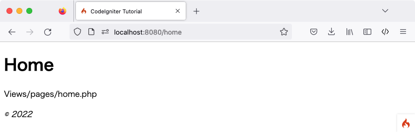

静态页面
备注
本教程假设已下载 CodeIgniter 并在开发环境中 安装了框架。
首先需要设置路由规则以处理静态页面。
设置路由规则
路由用于将 URI 与控制器方法关联。控制器是负责分发工作的类，稍后将进行创建。
开始设置路由规则。打开位于 app/Config/Routes.php 的路由文件。
初始状态下，唯一的路由指令应为：
<?php
use CodeIgniter\Router\RouteCollection;
/**
* @var RouteCollection $routes
*/
$routes->get('/', 'Home::index');
该指令表示，任何未指定内容的入站请求都由 Home 控制器内的 index() 方法处理。
在 '/' 路由指令 之后 添加以下代码：
use App\Controllers\Pages;
$routes->get('pages', [Pages::class, 'index']);
$routes->get('(:segment)', [Pages::class, 'view']);
CodeIgniter 自上而下读取路由规则，并匹配第一个符合规则的请求。每条规则都是一个正则表达式（左侧）到控制器及方法名（右侧）的映射。请求进入时，CodeIgniter 会查找首个匹配项，并调用相应的控制器和方法（可能带有参数）。
更多路由信息详见：URI 路由。
此处，$routes 对象中的第二条规则匹配 URI 路径为 /pages 的 GET 请求，并将其映射到 Pages 类的 index() 方法。
第三条规则使用占位符 (:segment) 匹配 URI 段，并将参数传递给 Pages 类的 view() 方法。
创建首个控制器
接下来需要设置一个处理静态页面的 控制器。控制器是负责分发工作的类，也是 Web 应用的纽带。
创建 Pages 控制器
在 app/Controllers/Pages.php 创建文件并编写以下代码。
重要
务必注意文件名的大小写。许多开发者在 Windows 或 macOS 等不区分大小写的文件系统上开发，但大多数服务器环境区分大小写。如果文件名大小写有误，本地正常运行的代码在服务器上将无法工作。
<?php
namespace App\Controllers;
class Pages extends BaseController
{
public function index()
{
return view('welcome_message');
}
public function view(string $page = 'home')
{
// ...
}
}
此处创建了名为 Pages 的类，其中的 view() 方法接收名为 $page 的参数。此外还包含一个 index() 方法，与 app/Controllers/Home.php 中的默认控制器相同，用于显示 CodeIgniter 欢迎页面。
备注
本教程涉及两个 view() 函数。一个是类方法 public function view($page = 'home')，另一个是用于显示视图的 return view('welcome_message')。从技术角度看它们都是函数，但在类中定义的函数称为“方法”。
Pages 类继承自 BaseController，而 BaseController 继承自 CodeIgniter\Controller。这意味着新创建的 Pages 类可以访问 CodeIgniter\Controller 类（system/Controller.php）中定义的方法和属性。
控制器是所有 Web 请求的核心。与任何 PHP 类一样，在控制器内部使用 $this 进行引用。
创建视图
创建首个方法后，现在来制作一些基础页面模板。此处将创建两个“视图”（页面模板），分别作为页眉和页脚。
在 app/Views/templates/header.php 创建页眉并添加以下代码:
<!doctype html>
<html>
<head>
<title>CodeIgniter Tutorial</title>
</head>
<body>
<h1><?= esc($title) ?></h1>
页眉包含加载主视图前需要显示的 HTML 基础代码和标题，同时还会输出稍后在控制器中定义的 $title 变量。接着在 app/Views/templates/footer.php 创建页脚并添加以下代码:
<em>© 2022</em>
</body>
</html>
为控制器添加逻辑
创建 home.php 和 about.php
此前已在控制器中设置了 view() 方法。该方法接收一个参数，即待加载的页面名称。
静态页面主体存放在 app/Views/pages 目录。
在该目录下创建 home.php 和 about.php 两个文件。在文件中随意输入一些内容并保存。如果想随便写点什么，试试"Hello World!"吧。
完善 Pages::view() 方法
为了加载这些页面，需要检查所请求的页面是否存在。以下是 Pages 控制器中 view() 方法的主体逻辑：
<?php
namespace App\Controllers;
// Add this line to import the class.
use CodeIgniter\Exceptions\PageNotFoundException;
class Pages extends BaseController
{
// ...
public function view(string $page = 'home')
{
if (! is_file(APPPATH . 'Views/pages/' . $page . '.php')) {
// Whoops, we don't have a page for that!
throw new PageNotFoundException($page);
}
$data['title'] = ucfirst($page); // Capitalize the first letter
return view('templates/header', $data)
. view('pages/' . $page)
. view('templates/footer');
}
}
在 namespace 行之后添加 use CodeIgniter\Exceptions\PageNotFoundException; 以导入 PageNotFoundException 类。
若请求的页面存在，则连同页眉页脚一起加载并返回。如果控制器返回字符串，该字符串将直接显示给用户。
备注
控制器必须返回字符串或 Response 对象。
若请求的页面不存在，则显示 “404 Page not found” 错误。
方法的第一行用于检查页面是否存在。使用 PHP 原生函数 is_file() 确认文件是否在预期位置。PageNotFoundException 是 CodeIgniter 的内置异常，会触发 404 错误页面。
在页眉模板中，使用 $title 变量自定义页面标题。标题的值在此方法中定义，但并非直接赋值给变量，而是赋值给 $data 数组中的 title 元素。
最后按照显示顺序加载视图。此处使用 CodeIgniter 内置的 view() 函数，通过第二个参数向视图传递数据。$data 数组中的每个值都会被分配给一个以其键名命名的变量。因此，控制器中的 $data['title'] 对应视图中的 $title。
运行应用
准备好测试了吗？不能直接使用 PHP 内置服务器运行应用，因为它无法正确处理 public 目录下的 .htaccess 规则（该规则用于在 URL 中隐藏 “index.php/”）。不过 CodeIgniter 提供了专有的运行命令。
在项目根目录下运行：
php spark serve
这将启动一个可通过 8080 端口访问的 Web 服务器。在浏览器中访问 localhost:8080 即可看到 CodeIgniter 欢迎页面。
现在访问 localhost:8080/home。路由是否已正确指向 Pages 控制器的 view() 方法？非常棒！
页面效果如下图所示：

可以在浏览器中尝试以下 URL，查看 Pages 控制器的输出结果：
URL |
显示内容 |
|---|---|
localhost:8080/ |
CodeIgniter “欢迎”页面。
来自 |
localhost:8080/pages |
来自 |
localhost:8080/home |
之前创建的 “home” 页面。
来自 |
localhost:8080/about |
之前创建的 “about” 页面。 |
localhost:8080/shop |
“404 - File Not Found” 错误页面， 因为不存在 app/Views/pages/shop.php。 |